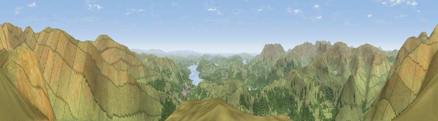

Viewpoint near Grasmere
#1355 in England · top 10% of its area beats it · near GrasmereThe view, rendered

A 360° render of this exact spot computed from the terrain model, tree cover and land cover — summer colours, afternoon light, calibrated against photographs of famous viewpoints. Real trees, hedges and buildings will differ in detail.
The panorama
Grey silhouette: terrain skyline in each direction (720 bearings, Earth curvature and refraction included). Dashed green: skyline with trees (+15 m) and buildings (+8 m) as obstacles. Blue strip: how far the ground is visible on each bearing.
Where the view opens
Wedge length = distance to the farthest visible ground on that bearing (vegetation-aware). Rings at 10, 25 and 50 km.
What fills the view
85% grassland · 13% woodland · 2% water
Angular shares of the visible panorama (visual magnitude), not map area. Landscape diversity 0.22 (0–1 Shannon).
Key numbers
More beautiful places nearby
The staircase of upgrades: each row has a higher view potential than everything closer. Driving times are estimates from straight-line distance, calibrated against real road routing — check an actual route before setting out.
| Place | Direction | Drive | Score |
|---|---|---|---|
| Viewpoint near Rydal | NE · 3 km | ~7 min | 79.4 |
| Viewpoint near Grasmere | NNE · 3 km | ~8 min | 80.7 |
| Fairfield | N · 4 km | ~8 min | 81.0 |
| High Crag | NNW · 6 km | ~12 min | 81.8 |
| Viewpoint near Legburthwaite | NNW · 7 km | ~15 min | 83.8 |
| Viewpoint near Legburthwaite | NNW · 8 km | ~16 min | 84.5 |
| Old Man of Coniston | SW · 13 km | ~24 min | 85.2 |
| Pillar | W · 19 km | ~32 min | 86.8 |
54.46518, -2.99545 · source: screening · position refined by local search. Computed location — check access rights before visiting.